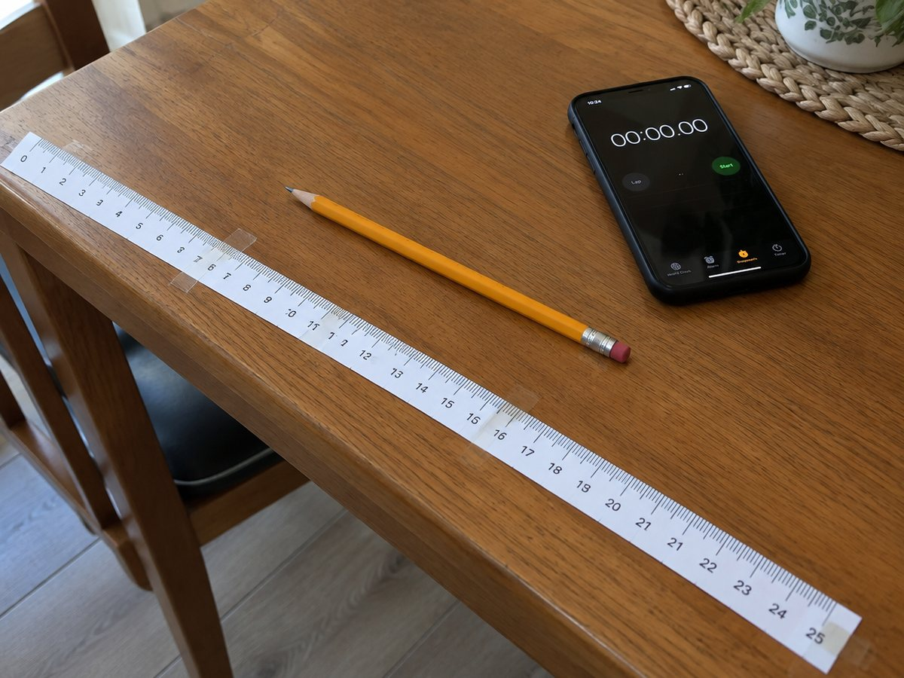

전체 단원 › 실험·활동 › 3학년 1학기 수학
종이띠 1m 자와 1분 감각 놀이

도안 4장을 이어 붙여 1m 줄자를 만들어 집 안을 재고, 스톱워치로 1분과 초의 감각을 익혀요.
만들기 15분 · 놀이 20분 · 난이도 ★☆☆ 쉬움
준비물
- 1m 자 도안 — 25cm 띠 4개 (A4 1장). 반드시 배율 100%로 인쇄해요
- 풀, 가위, 테이프 — 띠를 이어 붙여요
- 휴대폰 스톱워치 — 시간 놀이에 써요
- 길이 기록지 — 도안 오른쪽 칸에 있어요
하는 방법
- 인쇄 확인하기
인쇄한 띠의 0과 10 사이를 학교 자로 재 보세요. 정확히 10cm면 인쇄가 잘 된 거예요. - 1m 자 만들기
띠 4개를 오려 숫자가 이어지도록 0~25, 25~50, 50~75, 75~100 순서로 붙여요. 이음매는 테이프로 겹치지 않게 맞대요. - 어림하고 재기
식탁, 문, 침대 길이를 먼저 '몇 cm쯤?' 어림하고 자로 재서 기록지에 적어요. 1m가 넘으면 '1m 20cm'처럼 써요. - mm까지 재기
연필, 지우개처럼 작은 물건은 작은 눈금으로 재요. 작은 눈금 한 칸이 1mm, 10칸이 1cm예요. - 1분 맞히기
스톱워치를 켜고 눈을 감은 채 '1분 됐다!' 싶을 때 손을 들어요. 몇 초였는지 확인해요. - 1분 동안 해 보기
1분 동안 줄넘기 몇 번, 박수 몇 번을 할 수 있는지 재요. 60초 = 1분이에요.
생각해 봐요
- 내 키는 1m보다 얼마나 더 클까요?
- 어림한 길이와 잰 길이가 가장 많이 차이 난 물건은 무엇인가요?
- 눈을 감고 잰 1분은 실제보다 길었나요, 짧았나요?
왜 그럴까?
1cm를 10칸으로 나눈 한 칸이 1mm, 1cm가 100개 모이면 1m, 1m가 1000개 모이면 1km예요. 시간도 비슷해요. 1초가 60개 모이면 1분, 1분이 60개 모이면 1시간이에요. 길이는 10, 100, 1000씩, 시간은 60씩 묶인다는 게 달라요.
학교 교육과정 연결
- [4수03-13] 1분과 1초의 관계를 이해하고, 초 단위까지 시각을 읽을 수 있다.